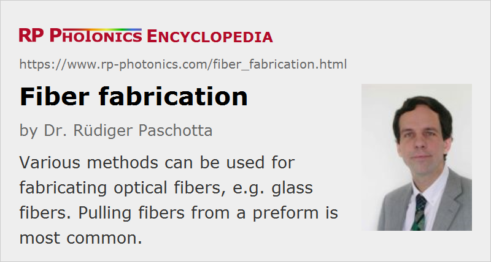

Fiber Fabrication
Definition: the fabrication of optical fibers
German: Faserherstellung
Category: fiber optics and waveguides
How to cite the article; suggest additional literature
Author: Dr. Rüdiger Paschotta
There is a wide range of methods for the fabrication of optical fibers. In a first step, these can be divided into methods involving a so-called preform and methods of direct fiber production. Preform-based methods are most important at least in the context of glass fibers, whereas direct methods, e.g. based on extrusion, are common for plastic optical fibers. In the following, this article first discusses how a fiber can be made from a preform, then how preforms are fabricated, and finally methods not requiring a preform.
Fiber Pulling from a Preform
Most glass fibers are fabricated by pulling from a so-called preform in a fiber-drawing tower, an apparatus which is typically several meters high. The preform is a glass rod with a diameter between about 1 cm and 10 cm and roughly 1 m to 2 m length. Along its axis, the preform contains a region with increased refractive index, which will form the fiber core. When the preform is heated close to the melting point in a furnace (oven) at the top of the drawing tower, a thin fiber can be pulled out of the bottom of the preform. The fiber from a single preform can be many kilometers long. During the pulling process, the fiber diameter is held constant by automatically adjusting the pulling speed (and possibly the furnace temperature) with an automatic feedback system (containing a diameter monitor below the furnace).
Fiber pulling works quite well for the usual silica fibers, since silica has a rather broad glass transition, i.e., a large range of temperatures in which the viscosity is in a suitable range. Other materials, as used e.g. for fluoride fibers, have a much smaller temperature range suitable for pulling, and the method is accordingly more delicate.
Before the fiber is wound up, it usually receives a polymer coating for mechanical and chemical protection. Such coatings can consist of two or more different layers for optimum suppression of microbends. Typical coating materials used are acrylate, silicone and polyimide. Additional PVC or similar protective coatings can be made by extrusion after the drawing process.
It is also possible to write type II fiber Bragg gratings into the fiber during the fabrication process. For that purpose, ultraviolet nanosecond laser pulses are shot at the fiber through some phase mask just before the fiber is coated.
Fabrication of Fiber Preforms
Vapor Deposition Methods
Many fiber preforms are fabricated with a process called modified chemical vapor deposition (MCVD or just CVD). This method was developed for silica telecom fibers in the 1970s, with pioneering contributions from the University of Southampton (UK), Bell Telephone Laboratories (Bell Labs), and Corning. Here, a mixture of oxygen, silicon tetrachloride (SiCl4) and possibly other substances (e.g. germanium tetrachloride (GeCl4) and rare earth dopants → fiber core) is passed through a rotating silica glass tube, which is heated from outside to ≈ 1600 °C with a flame. Chemical reactions in the gas form a fine soot of silica (and possibly other substances) which coats the inner surface of the glass tube near the burner and is sintered into a clear glass layer. The burner is continuously moved back and forth along the tube. Towards the end of the process, the gas mixture is modified to form a layer with higher refractive index, the precursor of the fiber core. Finally, the tube is collapsed by heating it to ≈ 2000 °C.
Various alternative vapor deposition methods have been developed:
- Outside vapor deposition (OVD) is a process where the silica soot is deposited on the surface of some target rod (e.g. a glass mandrel), rather than inside a tube as with MCVD. Together with the material precursors such as SiCl4, a fuel gas such as hydrogen or methane is supplied to a burner which is again moved along the rotating rod. After the deposition, the target rod is removed, and the preform is consolidated in a furnace, where it is also purged with a drying gas for lowering the hydroxyl content.
- Vapor phase axial deposition (VAD or AVD) is similar to OVD, but uses a modified geometry, where the deposition occurs at the end of the target rod. The rod is continuously pulled away from the burner, and very long preforms can be made. Consolidation of the material can be done in a separate zone melting process. An important difference to OVD and MCVD is that the doping profile is determined only by the burner geometry, rather than by a variation of the gas mixture over time.
- Plasma chemical vapor deposition (PCVD) uses deposition inside a tube, similar to MCVD. However, microwaves instead of a burner are used for heating the deposition region. The deposition is slow, but very precise. A modified method with particularly high precision is plasma impulse chemical vapor deposition (PICVD), where short microwave pulses are used. There is also plasma-enhanced chemical vapor deposition (PECVD), operating at atmospheric pressure with fairly high deposition rate.
- The preforms for multimode fibers, particularly for large core fibers, are often fabricated using plasma outside deposition (POD), where an outer fluorine-doped layer with depressed refractive index, later forming the fiber cladding, is made with a plasma torch. The core can then be made of pure silica, without any dopant.
The general advantage of vapor deposition methods is that extremely low propagation losses down to below 0.2 dB/km can be achieved, because very high-purity materials can be used and contamination is avoided. In particular, SiCl4 and GeCl4 are easily purified by distillation, as they are liquid at room temperature. Particularly when no hydrogen is present (e.g. as fuel gas), the water content of such preforms is very low, avoiding a strong loss peak at 1.4 μm, which would also affect the telecom bands (→ optical fiber communications).
The different vapor deposition methods differ in many respects, e.g. concerning the possible material purity, the degree, precision and flexibility of refractive index control, the mechanical strength of the fabricated fibers, and the deposition efficiency and speed.
Methods Without Vapor Deposition
For materials where vapor deposition can not be applied, the rod-in-tube technique is another option. Here, a rod of a glass with higher refractive index is inserted into a glass tube with lower refractive index. Both can be reasonably well connected by heating, but great care is required to avoid bubbles and other disturbances. There are also casting methods where the molten core glass is poured into the cladding tube, or sucked into the tube using a vacuum pump.
Preforms for photonic crystal fibers, containing small holes throughout, are usually fabricated by stacking capillary tubes and/or rods, in most cases made of pure fused silica. It is possible, of course, to introduce rare-earth-doped rods for active fiber devices.
Adapted Methods for Active Fibers
For active fiber devices such as fiber lasers and fiber amplifiers, rare-earth-doped fibers are required. Here, the fiber core is doped with rare earth ions e.g. of erbium, neodymium, ytterbium, or thulium. Additional dopants can modify the refractive index, improve the solubility for rare earth ions, or modify the photosensitivity.
Not all dopants can be easily incorporated with vapor deposition methods, requiring convective material transport. In particular, precursors for rare earth dopants usually have a too low vapor pressure. One possibility to overcome this problem is to expose the source of rare earth ions to a higher temperature. For example, a glass tube as used for MCVD may contain an additional dopant chamber or a porous silica part soaked with a rare earth salt, which is heated with an additional burner.
Another common technique is solution doping, where initially a porous silica frit (not yet containing rare earth ions) is deposited on the inner side of a hollow silica tube. This frit is then soaked with a solution containing a rare earth salt (e.g. a chloride). Later on, the preform needs to be further processed to form a dry and compact rare earth oxide layer.
An alternative technique is direct nanoparticle deposition from some aerosol. This method allows for high doping concentrations with good homogeneity and accurate control of the doping profile.
Also, sintering techniques [8] can be employed to fabricate rare-earth doped fiber cores.
Fabrication Methods Not Involving a Preform
Soft glass fibers are often fabricated with the double crucible method, where core and cladding are simultaneously drawn from the crucible. The crucible has a reservoir for the molten core glass, leaving a small opening at the center, and one (or several) reservoirs for cladding glass. The double crucible method is older than the vapor deposition methods and is still used e.g. for soft glasses. Compared with drawing from a preform, it can be adapted more easily to different glass materials. However, it is less suitable for producing ultrapure fibers with very low losses, as it is difficult to avoid any contamination with material from the crucible.
Some fibers, e.g. plastic optical fibers, are produced in a simple extrusion process, which is similar to the double crucible method. Such fibers are interesting for applications in mass markets, but do not reach top-level performance.
Questions and Comments from Users
Here you can submit questions and comments. As far as they get accepted by the author, they will appear above this paragraph together with the author’s answer. The author will decide on acceptance based on certain criteria. Essentially, the issue must be of sufficiently broad interest.
Please do not enter personal data here; we would otherwise delete it soon. (See also our privacy declaration.) If you wish to receive personal feedback or consultancy from the author, please contact him e.g. via e-mail.
By submitting the information, you give your consent to the potential publication of your inputs on our website according to our rules. (If you later retract your consent, we will delete those inputs.) As your inputs are first reviewed by the author, they may be published with some delay.
Bibliography
| [1] | S. Nagel et al., “An overview of the modified chemical vapor deposition (MCVD) process and performance”, IEEE J. Quantum Electron. 18 (4), 459 (1982), doi:10.1109/JQE.1982.1071596 |
| [2] | M. Blankenship and C. Deneka, “The outside vapor deposition method of fabricating optical waveguide fibers”, IEEE J. Quantum Electron. 18 (10), 1418 (1982), doi:10.1109/JQE.1982.1071426 |
| [3] | B. J. Ainslie, “A review of the fabrication and properties of erbium-doped fibers for optical amplifiers”, IEEE J. Lightwave Technol. 9 (2), 220 (1991), doi:10.1109/50.65880 |
| [4] | W. A. Gambling, “The rise and rise of optical fibers”, JSTQE 6 (6), 1084 (2000) (an informative review on the development of glass fibers) |
| [5] | X. Wang et al., “A review of the fabrication of optic fiber”, Proc. SPIE 6034, 60341D (2005), doi:10.1117/12.668147 |
| [6] | L. Cognolato, “Chemical vapour deposition for optical fibre technology”, J. Phys. IV France 5, C5-975 (1995), doi:10.1051/jphyscol:19955115 |
| [7] | A. Dhar et al., “The mechanism of rare earth incorporation in solution doping process”, Opt. Express 16 (17), 12835 (2008), doi:10.1364/OE.16.012835 |
| [8] | M. Leich et al., “Highly efficient Yb-doped silica fibers prepared by powder sinter technology”, Opt. Lett. 36 (9), 1557 (2011), doi:10.1364/OL.36.001557 |
See also: fibers, rare-earth-doped fibers, fiber core, photonic crystal fibers, optical fabrication
and other articles in the category fiber optics and waveguides
|  |
If you like this page, please share the link with your friends and colleagues, e.g. via social media:
These sharing buttons are implemented in a privacy-friendly way!